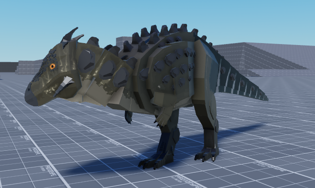
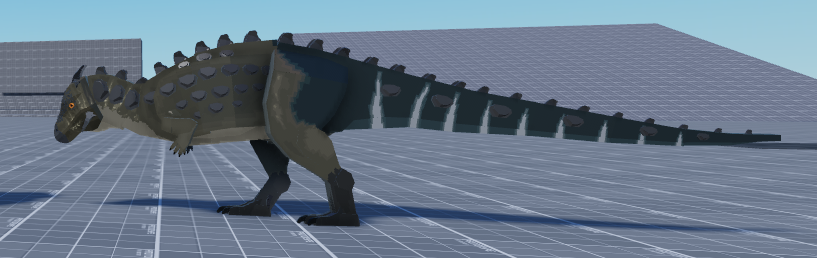

Jackapil


Jackapil — невеликий динозавр з міцним тілом та незвичайним зовнішнім виглядом. У грі він може бути швидким, обережним і добре підходити для виживання у небезпечному світі.
- тип: травоїдний
- розмір: малий
- переваги: швидкість, маневреність